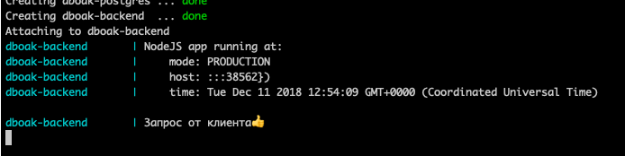
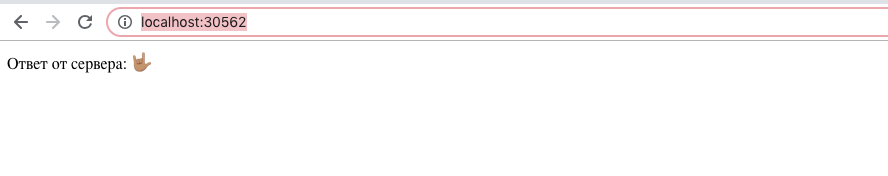

Онлайн версия доступна по ссылке
Добавляем в наш docker-compose.yml файл описание нового контейнера с сервером.
dboak-backend:
container_name: dboak-backend
depends_on:
- dboak-postgres
links:
- dboak-postgres
build:
context: ./
dockerfile: ./backend/Dockerfile
restart: always
environment:
- NODE_ENV=production
- CNFG_API__PORT=3000
- CNFG_DB__CONNECTION__HOST=dboak-postgres
- CNFG_DB__CONNECTION__PORT=23395
network_mode: bridge
ports:
- '30562:38562'
logging:
options:
max-size: '50m'Описание новых параметров далее:
Напишем в файл приложения backend/Dockerfile
FROM node:lts-slim
WORKDIR /opt
COPY config src package.json yarn.lock ./
RUN yarn --frozen-lockfile
EXPOSE 38562
ENTRYPOINT ["node", "."]
Установим зависимости yarn add pg express cnfg
Напишем в файл приложения backend/src/index.js
const { env, api } = require('../config');
const app = require('./app');
const { getClient } = require('./db');
const server = app.listen(api.port, () => {
console.log(`NodeJS app running at:
mode: ${(env.node_env).toUpperCase()}
host: ${server.address().address}:${api.port}})
time: ${new Date()}`);
});Напишем в файл приложения backend/src/app.js
const express = require('express');
const app = express();
app.get('/', async (req, res) => {
console.log('Запрос от клиента👍');
res.send('Ответ от сервера: 🤟🏽');
});
app.use('*', (req, res) => res.status(404).json({ description: 'Not found' }));
app.use((err, req, res, next) => {
console.error(err.stack);
res.status(500).send('Something broke!');
});
module.exports = app;
Напишем в файл приложения backend/src/db.js
const { Client } = require('pg');
const { db: config } = require('../config');
let client;
const connect = async () => {
client = new Client(config);
if (!client) {
throw new Error('Can\'n instantiate pg client!');
}
await client.connect();
console.log('Connection to DB successfull!');
return client;
};
const query = async (...params) => {
const cl = client || await connect();
return cl.query(...params);
};
module.exports = {
query,
getClient: () => client,
};docker-compose up --build
Увидим много логов загрузки всех зависимостей и сборки нового контейнера. При этом на БД эта команда уже не повлияет т.к. исходные данные контейнера для БД не изменялись и docker не перезапускает контейнеры без изменений для экономии ресурсов и времени.
➜ dut-db-organization-and-knowledges git:(master) ✗ ./clean.sh; docker-compose up --build
rm: ./results/*.html: No such file or directory
No stopped containers
Building dboak-md-to-html
Step 1/4 : FROM node:lts-slim
---> da165a9e35d9
Step 2/4 : WORKDIR /opt/results
---> Using cache
---> 90773ba33ecf
Step 3/4 : RUN yarn global add marked;
---> Using cache
---> 8771ccde18e1
Step 4/4 : ENTRYPOINT for f in *.md ; do marked "$f" -o "${f%%.*}".html ; done; cp README.html index.html; rm ./README.html;
---> Using cache
---> ce31b51d520e
Successfully built ce31b51d520e
Successfully tagged dut-db-organization-and-knowledges_dboak-md-to-html:latest
Building dboak-backend
Step 1/8 : FROM node:lts-slim
---> da165a9e35d9
Step 2/8 : WORKDIR /opt
---> Using cache
---> 200a7e0f9380
Step 3/8 : COPY config ./
---> 3e724d32a91a
Step 4/8 : COPY src ./
---> 751f71980678
Step 5/8 : COPY package.json yarn.lock ./
---> 30a87126f533
Step 6/8 : RUN yarn --frozen-lockfile
---> Running in 9ab28a0cbfbe
yarn install v1.12.3
warning package.json: No license field
warning No license field
[1/4] Resolving packages...
[2/4] Fetching packages...
info fsevents@1.2.4: The platform "linux" is incompatible with this module.
info "fsevents@1.2.4" is an optional dependency and failed compatibility check. Excluding it from installation.
[3/4] Linking dependencies...
[4/4] Building fresh packages...
Done in 20.10s.
Removing intermediate container 9ab28a0cbfbe
---> cb7c4cb847bc
Step 7/8 : EXPOSE 38562
---> Running in 5c077c6262a0
Removing intermediate container 5c077c6262a0
---> 9edde83ad371
Step 8/8 : ENTRYPOINT ["node", "."]
---> Running in e76c12cf97c8
Removing intermediate container e76c12cf97c8
---> 5846296ac305
Successfully built 5846296ac305
Successfully tagged dut-db-organization-and-knowledges_dboak-backend:latest
Creating dboak-postgres ... done
Creating dboak-md-to-html ... done
Creating dboak-backend ... done
Attaching to dboak-md-to-html, dboak-postgres, dboak-backend
dboak-backend | NodeJS app running at:
dboak-backend | mode: PRODUCTION
dboak-backend | host: :::38562})
dboak-backend | time: Tue Dec 11 2018 12:46:08 GMT+0000 (Coordinated Universal Time)Больше всего нас интересует последние строки NodeJS app running at означающие успешный запуск сервера.
Перейдем в браузере по адресу http://localhost:30562/
Видим, что сервер принял запрос и ответил.

